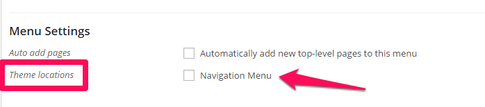
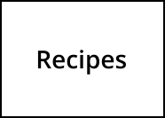
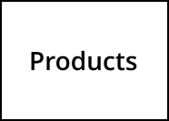
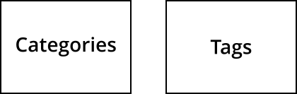
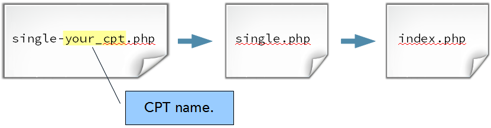
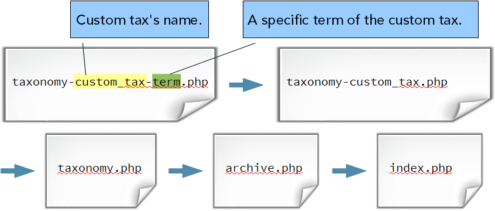

Building Themes for WordPress
With Tracy Levesque
@LilJimmi • tracy@yikesinc.com • TheTracyL.com
Day 2 Slides located at: thetracyl.com/gdi/building-themes/day2.html
Day 2
Today you will...
- Learn about loops and queries
- Learn about adding functionality to your theme
- Learn about hooks, actions and filters
- Learn some handy WordPress functions
- Learn how to make widgetized areas and widgets
- Learn about custom post types (if there's time)
And
- Take a 15 minute break at 3pm
But First
A review...
- What is the #1 rule of WordPress development?
- What is the proper method of modifying an existing WordPress theme?
- What is a conditional tag?
- What is the purpose of the WordPress Template Hierarchy?
- What is the benefit of using a Starter Theme?
The Loop
codex.wordpress.org says:
The Loop is PHP code used by WordPress to display posts.
The Loop
Runs on Every Page
The Loop is a set of instructions in a template that grabs content and displays it on a page.
It's called a "loop" because the set of instructions can be repeated multiple times on a page. For example, index.php.
Check out the WordPress Codex The Loop
The Loop
What it is
Within the main loop are the main parts of a page or post.
<?php the_title(); ?>
<?php the_content(); ?>
The Loop
What it is
You can also grab additional content, aka Metadata, attached to pages or posts. Some function tags will only work if they are placed within The Loop.
- Author
- Date
- Featured Image
- Categories (posts only)
- Tags (posts only)
- Etc.
The Loop
Examples
Let's check out The Loop in a few different Twentythirteen templates
page.phpindex.phpcontent.php
Exercise time!
Practice modifying the WordPress Loop
- Make a copy of a template in your child theme and modify the default loop
- Suggestion: Remove comments from pages.
WP_Query
Use WP_Query to write your own loops
Check out the WordPress Codex WP_Query
WP_Query
Basic Structure
<!-- // The Query -->
<?php $myloop = new WP_Query( $args ); ?>
<ul>
<!-- // Loop starts -->
<?php while ($myloop->have_posts()) : $myloop->the_post(); ?>
<li>
<h2><?php the_title(); ?></h2>
<p><?php the_content(); ?></p>
</li>
<!-- // Loop ends -->
<?php endwhile; ?>
</ul>
Check out the WordPress Codex WP_Query
WP_Query
$args
Show posts by a certain author:<!-- // The Query -->
<?php $myloop = new WP_Query( 'author_name=tracy' ); ?>
Check out the WordPress Codex WP_Query Author Parameters
WP_Query
$args
Show posts in a certain category:<!-- // The Query -->
<?php $myloop = new WP_Query( 'cat=4' ); ?>
Check out the WordPress Codex WP_Query Category Parameters
WP_Query
$args
Show posts with a certain tag:<!-- // The Query -->
<?php $myloop = new WP_Query( 'tag=cats' ); ?>
Check out the WordPress Codex WP_Query Tag Parameters
WP_Query
$args
Show x number of posts at a time:<!-- // The Query -->
<?php $myloop = new WP_Query( 'posts_per_page=5' ); ?>
Check out the WordPress Codex WP_Query Pagination Parameters
WP_Query
$args
Order posts in alphabetical order by title:<!-- // The Query -->
<?php $myloop = new WP_Query( 'orderby=title' ); ?>
Check out the WordPress Codex WP_Query Orderby Parameters
WP_Query
$args
Put multiple parameters in an array:<!-- // The Query -->
<?php $myloop = new WP_Query( array( 'cat' => 'cooking', 'posts_per_page' => '5', 'orderby' => 'date', 'order' => 'DESC' ) ); ?>
<ul>
<!-- // The Loop -->
<?php while ($myloop->have_posts()) : $myloop->the_post(); ?>
<li>
<h2><?php the_title(); ?></h2>
<p><?php the_content(); ?></p>
</li>
<?php endwhile; ?>
<!-- // The end of The Loop -->
</ul>
WP_Query
If inside the main loop
Use wp_reset_postdata();
<!-- // The Query -->
<?php $myloop = new WP_Query( $args ); ?>
<ul>
<!-- // Loop starts -->
<?php while ($myloop->have_posts()) : $myloop->the_post(); ?>
<li>
<h2><?php the_title(); ?></h2>
<p><?php the_content(); ?></p>
</li>
<!-- // Loop ends -->
<?php endwhile; ?>
<?php wp_reset_postdata(); // restores the main loop ?>
</ul>
Tip: Use the Transients API
<?php
// Check for transient. If none, then execute WP_Query
if ( false === ( $lastpostsloop = get_transient( 'home_lastposts_loop' ) ) ) {
$lastpostsloop = new WP_Query( $args ));
// Put the results in a transient. Expire after 12 hours.
set_transient( 'home_lastposts_loop', $lastpostsloop, 12 * HOUR_IN_SECONDS );
} ?>
<!-- // The Loop -->
<?php while ($lastpostsloop->have_posts()) : $lastpostsloop->the_post(); ?>
<h3><a href="<?php the_permalink(); ?>"><?php the_title(); ?></a></h3>
<!-- // The end of The Loop -->
<?php endwhile; ?>
<?php wp_reset_postdata(); ?>
Check out the WordPress Codex Transients API
Exercise time!
Make a "Recent Posts" featured content box on the home page
- Make a Home Page Template
- Add a content box
- Create a WP_Query loop to show the latest 5 posts
Adding functionality
functions.php
functions.php is a special file that acts like a plugin to add functionality to your theme. If you're using a child theme you can use it modify and add functionality to the parent theme.
Check out the WordPress Codex Functions File Explained
Adding functionality
functions.php in a child theme
functions.php works like style.css in a child theme. It adds to and modifies the parent's functions.php. You don't make a copy of it in your child theme folder like you do with template files, you start a new one.
<?php
/**
* My theme functions and definitions
*/
(all your functions go here)
?>
Adding functionality
functions.php
You can tell your theme to load external files in functions.php. It helps you keep functions.php from being overloaded with too much code.
// Load a file from the inc folder
require_once 'inc/my-file.php';
Adding functionality
Keeping things organized
It's important to keep theme files organized.
- awesome (theme folder)
- css (any theme css you want to keep out of style.css)
- images (all the images used in your theme)
- inc (includes, I put functionality-related stuff in here)
- css (css used for functionality in the
incfolder) - images (images used for functionality in the
incfolder) - js (js used for functionality in the
incfolder)
- css (css used for functionality in the
- js (theme javascript)
Adding functionality
Hooks, Action and Filters
codex.wordpress.org says:
Hooks are provided by WordPress to allow your plugin to 'hook into' the rest of WordPress...There are 2 kinds of hooks:
- Actions: A custom PHP function defined in your plugin (or theme) and hooked, i.e. set to respond, to specific events that take place in WordPress.
- Filters: Functions that WordPress passes data through, at certain points in execution, just before taking some action with the data
Adding functionality
Hooks, Action and Filters
Hooks, Actions and Filters allow you to change core WordPress functionality without breaking it.
Adding functionality
Hooks, Action and Filters
Hooks - Points at which WordPress allows you to tap into a function and safely modify it.
Some examples are:
- Changing the length of the excerpt
- Adding Widgetized areas
- Adding Menu areas
- And hundreds of other things
Adding functionality
Hooks, Action and Filters
Actions - A hook that makes something new happen when a WordPress function is triggered.
Adding functionality
Hooks, Action and Filters
Filters - A hook that modifies a WordPress function when it is triggered.
Adding functionality
Hooks, Action and Filters
Visual Demo of Hooks, Actions and Filters
From my talk at WordCamp San Francisco.
19 minutes in.
Adding functionality
Handy WordPress Functions
The following is an overview of some handy WordPress functions you can hook into to enrich your themes.
Check out the WordPress Codex Entire Function Reference
Adding functionality
add_image_size
You can add custom images sizes (in addition to the default thumb, medium, large and original).
add_image_size( 'my-img', 400, 400 ); // soft proportional crop mode
add_image_size( 'other-img', 200, 269, true ); // hard crop mode
Check out the WordPress Codex add image size
Adding functionality
get_the_post_thumbnail
In your queries you can use get_the_post_thumbnail to load custom sizes of featured images.
<?php echo get_the_post_thumbnail($page->ID, 'my-img'); ?>
Adding functionality
Tip: Regenerate Thumbnails
Adding custom thumbnail sizes to functions.php will not affect images previously uploaded, only images uploaded from that point on. You will need to regenerate older images.
You can use the handy Regenerate Thumbnails plugin to create the custom sizes of your previously uploaded images.
Adding functionality
register_nav_menus
 If you have used custom menus in WordPress sites before (Appearance > Menus in the admin) you know a theme can have specific menu locations.
Check out the WordPress Codex register nav menus
Adding functionality
register_nav_menus
Use register_nav_menus to register your menus.
register_nav_menus( array(
'footer-nav' => 'Footer Menu',
) );
Adding functionality
wp_nav_menu
Use the wp_nav_menu tag to assign a menu to a location in your theme.
<?php wp_nav_menu( array( 'theme_location' => 'footer-nav' ) ); ?>
Check out the WordPress Codex wp nav menu
Adding functionality
wp_nav_menu
You can also use wp_nav_menu to load any custom menu you've created in Appearance > Menus. You can use the menu's ID, slug, or name.
<?php wp_nav_menu( array('menu' => '2' )); ?>
Adding functionality
register_sidebar
 Most themes come with specific widgetized areas -- locations in the sidebar, footer, header, etc. that you can drag and drop widgets into. You can use
Most themes come with specific widgetized areas -- locations in the sidebar, footer, header, etc. that you can drag and drop widgets into. You can use register_sidebar to create widgetized areas in your theme.
Check out the WordPress Codex register sidebar
Adding functionality
register_sidebar
Use register_sidebar to register your widgetized areas.
register_sidebar(array(
'name' => __( 'Header Widget Area' ),
'id' => 'headerwidget',
'description' => __( 'The header widget area.' ),
'before_widget' => '<div id="%1$s" class="headerwidget %2$s">',
'after_widget' => '</div>',
'before_title' => '<h4 class="headerwidgettitle">',
'after_title' => '</h4>',
));
Adding functionality
dynamic_sidebar
Use the dynamic_sidebar tag to assign a widgetized area to a location in your theme.
<?php dynamic_sidebar( 'headerwidget' ); ?>
Check out the WordPress Codex dynamic sidebar
Adding functionality
dynamic_sidebar with conditional tags
Use the dynamic_sidebar tag along with conditional tags to load certain widget areas on certain pages.
if(is_page( 'about' )){
dynamic_sidebar( 'aboutsidebar' );
}
if(is_page( 'contact' )){
dynamic_sidebar( 'contactsidebar' );
}
Exercise time!
Add some functionality to your theme!
Try to use any of the functions we learned today.
- add_image_size
- get_the_post_thumbnail
- register_nav_menus
- wp_nav_menu
- register_sidebar
- dynamic_sidebar
Try to do it yourself (if you're stuck download functions.php off Github).
Adding functionality
WP_Widget
Not only can you create widgetized areas, you can create widgets to drag and drop into those areas.
Check out the WordPress Codex Widgets API
Creating Widgets
WP_Widget
Note: You should put the widget code in its own file. If your widget is breaking the site you can easily turn it "on" and "off" while you troubleshoot code. Add a line of code to functions.php to load the file.
"On"
/* load my widget */
require_once 'inc/my-widget.php';
"Off"
/* load my widget */
//require_once 'inc/my-widget.php';
Creating Widgets
Example Widget: My Awesome Widget
We'll go through all the code for My Awesome Widget
Exercise time!
Make a widget
We'll be here to help.
Custom Post Types
Official description from WordPress.org
A Custom Type is a Post Type you define.
Check out the WordPress Codex Post Types
Custom Post Types
WordPress comes with 2 major Post Types:
They both
- Are unique content types with their own sets of fields
- Have their own admin area on the WordPress admin
- Let you add content in a repeating and consistent manner
- Have a consistent layout on the front-end
Custom Post Types
Create your own Post Types!
You can create your own post type that has its own fields, admin in the back-end and layout on the front-end. This is perfect for any type of repeating content you want to manage easily from the WordPress admin.
 
Custom Post Types
Custom Taxonomies
Custom Post Types can also have their own custom taxonomies. That just means they can have their own ways to group posts together.
Categories and Tags are taxonomies for Posts and Pages.

Custom Post Types
Custom Taxonomies
If we made a custom post type "Movies."
We could make custom taxonomies this post type
Custom Post Types
Custom Taxonomies
Using The WordPress Template Hierarchy we can make templates for the archive pages for these taxonomies.
Custom Post Types
Front end and admin tour of the custom post type "Kittens."
You can also watch a video of my presentation: Custom Post Types for Right-Brained folks on WordPress.tv
Creating Custom Post Types
Note: Just like with widgets, CPT code should be put in its own file. You can put a line of code in functions.php to load the file.
require_once 'inc/kittens.php';
Creating Custom Post Types
Step One inc/kittens.php
inc/kittens.php is the file that defines all the details for our Custom Post Type and Custom Taxonomies.
Check out the WordPress Codex register post type
Creating Custom Post Types
Step One inc/kittens.php
Register your custom post type and custom taxonomies. We'll go through all the code for our Kittens CPT
Creating Custom Post Types
Note
Naming Best Practices While it's convenient to name your custom post type a simple name like "product," it is better if you prefix your name with a short "namespace" that identifies your theme.
Also CPT names have a max. of 20 characters and can not contain capital letters or spaces.
Creating Custom Post Types
Step Two page-kittens.php
Make the template file that contains the loop for our Kittens CPT. We are going to use our template making and WP_Query skills to make a page to display our kittens.
Creating Custom Post Types
Step Three single-wcp_kittens.php
Remember The WordPress Template Hierarchy?
It works for CPTs, too.

Creating Custom Post Types
Step Three single-wcp_kittens.php
Make the template file for a single Kitten post. We'll throw in a custom thumbnail.
Creating Custom Post Types
Tip!
Hey, I'm getting a 404 error when I view a single kitten
Have you named everything correctly and you're getting a 404 when you click on your CPT? Before Googling, reading support forums and going out of your mind refresh your permalinks. That will do the trick.
Creating Custom Post Types
Making templates for our custom taxonomies
The WTH also works for custom taxonomies.

Creating Custom Post Types
Custom taxonomy templates: taxonomy.php and taxonomy-custom_cat_color.php
Make a template for all custom taxonomy archive pages and for a specific term.
View the code on Github: taxonomy.php and taxonomy-custom_cat_color.php
Resources
- WP Snippets - WordPress Code Snippets
- How to Create a WordPress Widget - 4 Killer Tutorials You Should Read
- Dashicons - Dashicons is the official icon font of the WordPress admin as of 3.8. Use them for your CPTs
- WordPress Custom Post Type Generator - A handy tool to help you create a Custom Post Type code
THE END of Day 2
Questions and 1-on-1 help time!
And please take the GDI survey